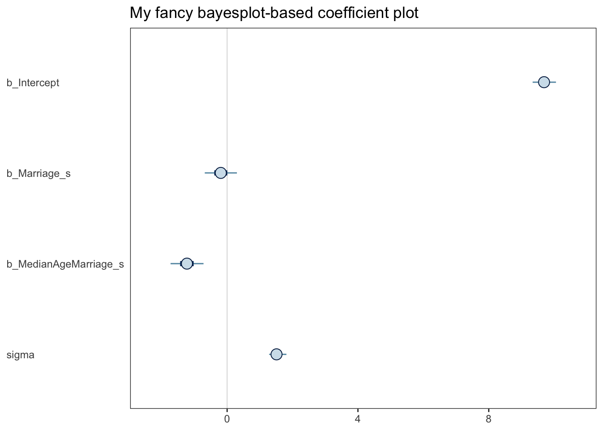
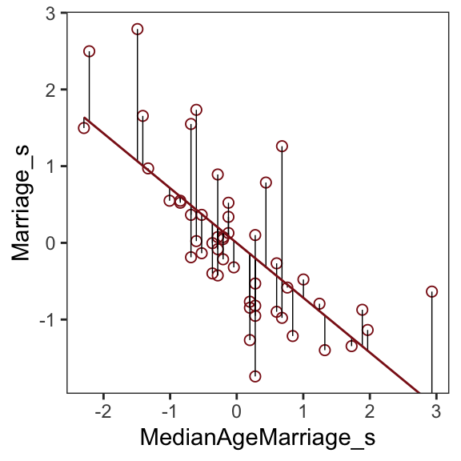
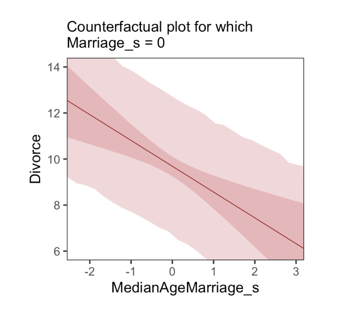
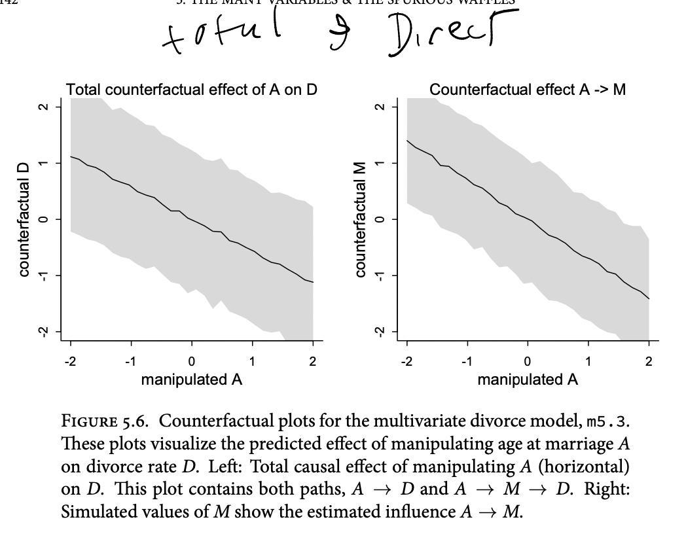
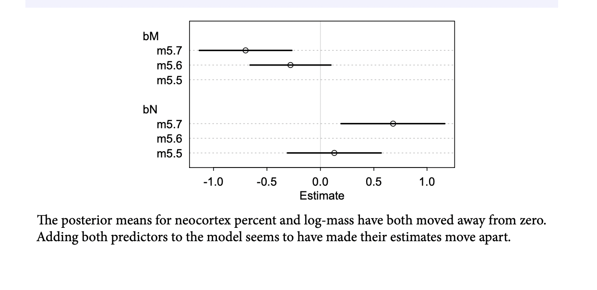
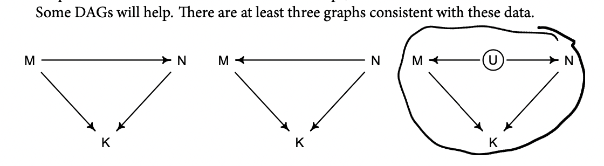
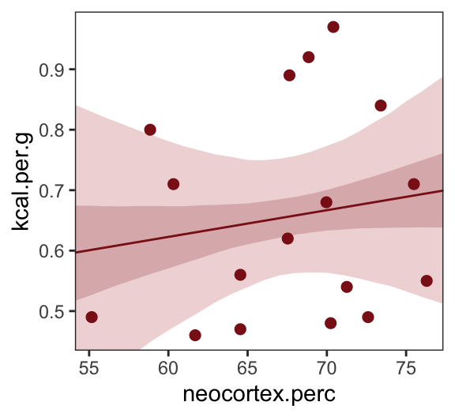
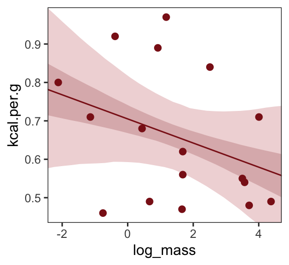
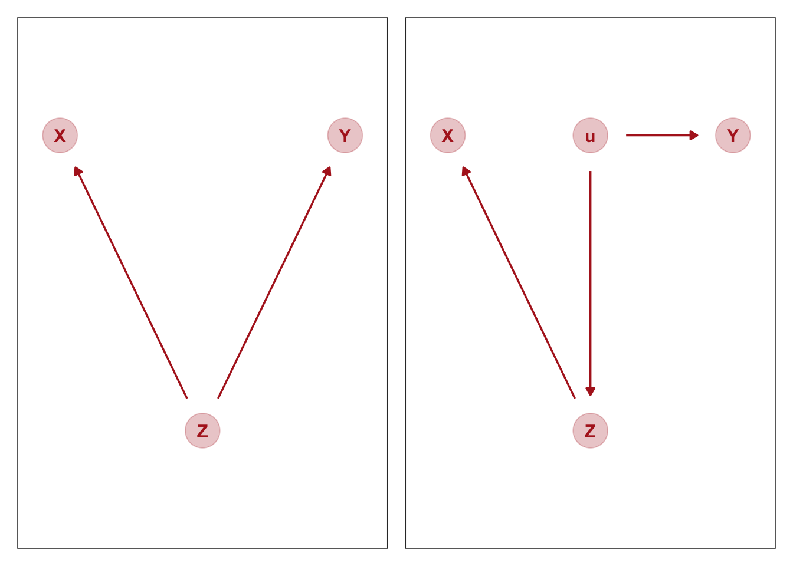
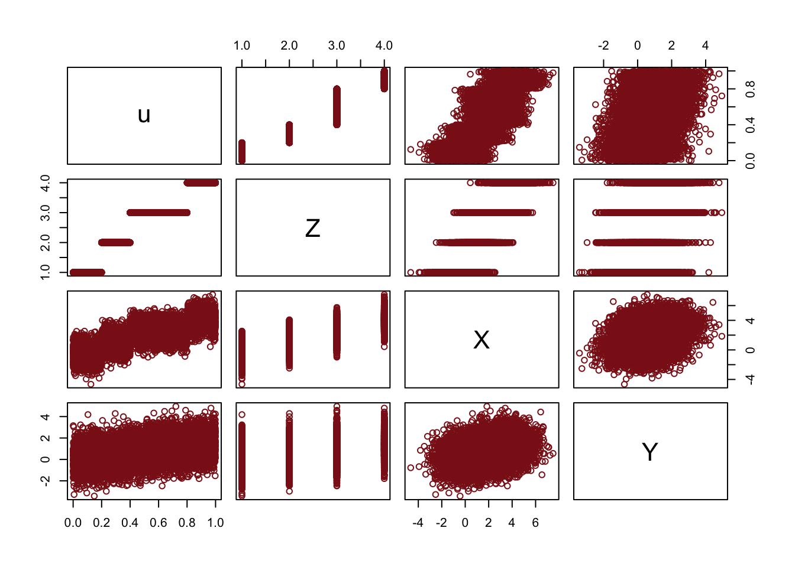

25 Ch 5. The Many Variables & The Spurious Waffles
Load the Waffle House data.
Reasons given for multiple regression models include: (1) Statistical -control” for confounds1
5.1. Spurious association
But there’s no reason high marriage rate must cause more divorce
… the ‘causal’ part is ambiguous in this example, particularly when we are talking about aggregates like ‘rates for the whole population’. I’m familiar with the framework of the Rubin causal model, where we consider the counterfactual state of some real-world outcome, when another real-world outcome would be set at one level or another.
easy to imagine high marriage rate indicating high cultural valuation of marriage and therefore being associated with low divorce rate
DR:2
Since the outcome and the predictor are both standardized, the intercept - should end up very close to zero
\(\alpha ∼ Normal(0, 0.2)\)
DR:3
So when \(\beta_A = 1\), a change of 1.2 years in median age at marriage is associated with a full standard deviation change in the outcome variable [which he thinks is absurdly large]
DR:4
[a model] that includes both age at marriage and marriage rate will help us.
DR:5
causal impact
DR:6
DAG will tell you the consequences of intervening to change a variable. But only if the DAG is correct
Perhaps a direct effect would arise because younger people change faster than older people and are therefore more likely to grow incompatible with a partner. Second, it has an indirect effect by influencing the marriage rate, which then influences divorce, A \(\rightarrow\) M \(\rightarrow\) D
these different arrows, we need more than one statistical model.
Model m5.1, the regression of D on A, tells us only that the total influence of age at marriage is strongly negative with divorce rate
DR:7
The ‘total’ here means we have to account for every path from A to D. There are two such paths in this graph: \(A \rightarrow D\), a direct path, and \(A \rightarrow M \rightarrow D\), an indirect path. In general, it is possible that a variable like A has no direct effect at all on an outcome like D. It could still be associated with D entirely through the indirect path. That type of relationship is known as mediation, and we’ll have another example later.
This DAG is also consistent with the posterior distributions of models m5.1 and m5.2. Why? Because both M and D ‘listen’ to A
conditional independencies … which variables become dis-associated when we condition on some other set of variables.
… that every pair of variables is correlated. This is because there is a causal arrow between every pair. These arrows create correlations.
DR:8
They share a cause, and this leads them to be correlated with one another through that cause. But suppose we condition on A. All of the information in M that is relevant to predicting D is in A. So once we’ve conditioned on A, M tells us nothing more about D. So in the second DAG, a testable implication is that D is independent of M, conditional on A. In other words, \(D \perp M|A\).
Here’s the code to define the second DAG and display the implied conditional independencies.
Code
library(dagitty)
DMA_dag2 <- dagitty::dagitty('dag{ D <- A -> M }')
impliedConditionalIndependencies( DMA_dag2 )D _||_ M | ASo for example once you fit a multiple regression to predict divorce using both marriage rate and age at marriage, the model addresses the questions: (1) After I already know marriage rate, what additional value is there in also knowing age at marriage? (2) After I already know age at marriage, what additional value is there in also knowing marriage rate?
DR: how can we differentiate 1 from 2:9
Coding data vis and univariate models (Kurz)
Kurz on themes and plots:10
Code
# install.packages("ggrepel", dependencies = T)
library(ggrepel)
d %>%
ggplot(aes(x = WaffleHouses/Population, y = Divorce)) + #note we can put transformations *within* the `aes`
stat_smooth(method = "lm", fullrange = T, size = 1/2,
color = "firebrick4", fill = "firebrick", alpha = 1/5) + #the linear plot and the shaded 'some sort of bounds' thing (what bound?)
geom_point(size = 1.5, color = "firebrick4", alpha = 1/2) +
geom_text_repel(data = d %>% filter(Loc %in% c("ME", "OK", "AR", "AL", "GA", "SC", "NJ")), #only for key US states of interest
aes(label = Loc),
size = 3, seed = 1042) + # this makes it reproducible
scale_x_continuous("Waffle Houses per million", limits = c(0, 55)) +
ylab("Divorce rate") +
coord_cartesian(xlim = c(0, 50), ylim = c(5, 15)) +
theme_bw() +
theme(panel.grid = element_blank()) #removes gridlines
DR note: I’m skipping the map plotting, for now, even though it’s a cool vis.
fit the first univariable model, print it
Family: gaussian
Links: mu = identity; sigma = identity
Formula: Divorce ~ 1 + MedianAgeMarriage_s
Data: d (Number of observations: 50)
Draws: 4 chains, each with iter = 2000; warmup = 500; thin = 1;
total post-warmup draws = 6000
Population-Level Effects:
Estimate Est.Error l-95% CI u-95% CI Rhat Bulk_ESS Tail_ESS
Intercept 9.69 0.22 9.25 10.12 1.00 5173 4232
MedianAgeMarriage_s -1.04 0.21 -1.46 -0.63 1.00 4436 4274
Family Specific Parameters:
Estimate Est.Error l-95% CI u-95% CI Rhat Bulk_ESS Tail_ESS
sigma 1.51 0.16 1.24 1.86 1.00 5403 4424
Draws were sampled using sampling(NUTS). For each parameter, Bulk_ESS
and Tail_ESS are effective sample size measures, and Rhat is the potential
scale reduction factor on split chains (at convergence, Rhat = 1).Below…
- Create:
nd– tibble of standardized predictor values to plot over - apply
fittedtondwith thenewdataargument to fit values over this range (rather than over the data the model was fit on)
“to return model-implied expected values for Divorce”
Range to plot over, predict for this range
# define the range of `MedianAgeMarriage_s` values we'd like to feed into `fitted()`
nd <- tibble(MedianAgeMarriage_s = seq(from = -3, to = 3.5, length.out = 30))
# now use `fitted()` to get the model-implied trajectories
f <-
fitted(b5.1, newdata = nd) %>%
as_tibble() %>%
# tack the `nd` data onto the `fitted()` results
bind_cols(nd)Plot predictions
# plot
ggplot(data = f,
aes(x = MedianAgeMarriage_s, y = Estimate)) +
geom_smooth(aes(ymin = Q2.5, ymax = Q97.5),
stat = "identity",
fill = "firebrick", color = "firebrick4", alpha = 1/5, size = 1/4) +
geom_point(data = d, #overlaying the original data
aes(y = Divorce),
size = 2, color = "firebrick4") +
ylab("Divorce") +
coord_cartesian(xlim = range(d$MedianAgeMarriage_s),
ylim = range(d$Divorce)) +
theme_bw() +
theme(panel.grid = element_blank()) 
Next … they do the same thing but with marriage rate as the predictor
Code
print(b5.2) Family: gaussian
Links: mu = identity; sigma = identity
Formula: Divorce ~ 1 + Marriage_s
Data: d (Number of observations: 50)
Draws: 4 chains, each with iter = 2000; warmup = 500; thin = 1;
total post-warmup draws = 6000
Population-Level Effects:
Estimate Est.Error l-95% CI u-95% CI Rhat Bulk_ESS Tail_ESS
Intercept 9.68 0.25 9.19 10.17 1.00 5003 4432
Marriage_s 0.63 0.25 0.15 1.11 1.00 5641 4331
Family Specific Parameters:
Estimate Est.Error l-95% CI u-95% CI Rhat Bulk_ESS Tail_ESS
sigma 1.75 0.19 1.43 2.17 1.00 5148 3934
Draws were sampled using sampling(NUTS). For each parameter, Bulk_ESS
and Tail_ESS are effective sample size measures, and Rhat is the potential
scale reduction factor on split chains (at convergence, Rhat = 1).I’ll skip plotting this for now
Multiple regression notation
Model with
mu <- a + bM*M + bA*A
Notice how bA doesn’t move, only grows a bit more uncertain, while bM is only associated with divorce when age at marriage is missing from the model. You can interpret these distributions as saying:
Once we know median age at marriage for a State, there is little or no additional predictive power in also knowing the rate of marriage in that State. In that weird notation, \(D \perp M|A\). This tests the implication of the second DAG from earlier.
Since the first DAG did not imply this result, it is out
DR: This seems like a very weak test and a poor strategy for making inferences about causality (more so running with those inferences to underly future modeling). Even when age is present in the model, the compatibility intervals for the marriage rate coefficient include rather large coefficients in either direction.
Fitting the (multivariate) model
‘Priors for each slope’11
Code
print(b5.3) Family: gaussian
Links: mu = identity; sigma = identity
Formula: Divorce ~ 1 + Marriage_s + MedianAgeMarriage_s
Data: d (Number of observations: 50)
Draws: 4 chains, each with iter = 2000; warmup = 500; thin = 1;
total post-warmup draws = 6000
Population-Level Effects:
Estimate Est.Error l-95% CI u-95% CI Rhat Bulk_ESS Tail_ESS
Intercept 9.69 0.22 9.27 10.13 1.00 5542 4118
Marriage_s -0.19 0.30 -0.78 0.40 1.00 4042 4202
MedianAgeMarriage_s -1.23 0.31 -1.82 -0.62 1.00 4021 4081
Family Specific Parameters:
Estimate Est.Error l-95% CI u-95% CI Rhat Bulk_ESS Tail_ESS
sigma 1.53 0.16 1.25 1.88 1.00 5026 3391
Draws were sampled using sampling(NUTS). For each parameter, Bulk_ESS
and Tail_ESS are effective sample size measures, and Rhat is the potential
scale reduction factor on split chains (at convergence, Rhat = 1).mcmc_plot(b5.3) seems to produce a ggplot object:
Code
(
xxx <- mcmc_plot(b5.3) + ggtitle("My fancy bayesplot-based coefficient plot") +
theme_bw() +
theme(axis.text.y = element_text(hjust = 0),
axis.ticks.y = element_blank(),
panel.grid = element_blank()
)
)
With the bayesplot::mcmc_intervals function you can specify what you want more precisely.
Code
# install.packages("bayesplot", dependencies = T)
library(bayesplot)
post <- posterior_samples(b5.3)
color_scheme_set("red")
mcmc_intervals(post[, 1:4],
prob = .65,
prob_outer = 0.95,
point_est = "mean") + #Kurz and the default use 'median'
ggtitle("My fancy bayesplot-based coefficient plot") +
theme_bw() +
theme(axis.text.y = element_text(hjust = 0),
axis.ticks.y = element_blank(),
panel.grid = element_blank())
Note; this approach required you to work with the posterior_samples() instead of the brmsfit object. Just to be different, I set point_est = "mean" instead of median, and prob = .65 for the ‘inner interval’ and prob_outer = 0.95.
The tidybayes::stat_pointinterval() function offers a third way, this time with a more ground-up ggplot2 workflow.
… I will return to that later, perhaps. I think Willem would prefer the control that ‘doing it yourself with ggplot’ offers
Plotting multivariate posteriors.
- Predictor residual plots. These plots show the outcome against residual predictor values. …
- Posterior prediction plots. These show model-based predictions against raw data, or otherwise display the error in prediction. They are tools for checking fit and assessing predictions. …
- Counterfactual plots. These show the implied predictions for imaginary experiments. These plots allow you to explore the causal implications of manipulating one or more variables.
Predictor residual plots
Predictions and residuals: outcomes vs
‘How well does the “surprise part”12 of one feature predict the outcome’“?
To get ready to make our residual plots, we’ll predict
Marriage_swithMedianAgeMarriage_s.
Code
Family: gaussian
Links: mu = identity; sigma = identity
Formula: Marriage_s ~ 1 + MedianAgeMarriage_s
Data: d (Number of observations: 50)
Draws: 4 chains, each with iter = 2000; warmup = 500; thin = 1;
total post-warmup draws = 6000
Population-Level Effects:
Estimate Est.Error l-95% CI u-95% CI Rhat Bulk_ESS Tail_ESS
Intercept -0.00 0.10 -0.20 0.20 1.00 5731 4560
MedianAgeMarriage_s -0.71 0.10 -0.91 -0.51 1.00 5623 4288
Family Specific Parameters:
Estimate Est.Error l-95% CI u-95% CI Rhat Bulk_ESS Tail_ESS
sigma 0.72 0.08 0.59 0.89 1.00 5449 4270
Draws were sampled using sampling(NUTS). For each parameter, Bulk_ESS
and Tail_ESS are effective sample size measures, and Rhat is the potential
scale reduction factor on split chains (at convergence, Rhat = 1).With
fitted(), we compute the expected values for each state (with the exception of Nevada).14
# A tibble: 6 × 19
Estimate Est.E…¹ Q2.5 Q97.5 Locat…² Loc Popul…³ Media…⁴ Marri…⁵ Marri…⁶
<dbl> <dbl> <dbl> <dbl> <fct> <fct> <dbl> <dbl> <dbl> <dbl>
1 0.431 0.119 0.199 0.667 Alabama AL 4.78 25.3 20.2 1.27
2 0.489 0.124 0.245 0.732 Alaska AK 0.71 25.2 26 2.93
3 0.144 0.104 -0.0560 0.350 Arizona AZ 6.33 25.8 20.3 0.98
4 1.01 0.177 0.657 1.36 Arkans… AR 2.92 24.3 26.4 1.7
5 -0.430 0.117 -0.660 -0.197 Califo… CA 37.2 26.8 19.1 0.39
6 0.202 0.106 -0.00519 0.409 Colora… CO 5.03 25.7 23.5 1.24
# … with 9 more variables: Divorce <dbl>, Divorce.SE <dbl>, WaffleHouses <int>,
# South <int>, Slaves1860 <int>, Population1860 <int>, PropSlaves1860 <dbl>,
# MedianAgeMarriage_s <dbl>, Marriage_s <dbl>, and abbreviated variable names
# ¹Est.Error, ²Location, ³Population, ⁴MedianAgeMarriage, ⁵Marriage,
# ⁶Marriage.SEAfter a little data processing, we can make Figure 5.3.
Code
f %>%
ggplot(aes(x = MedianAgeMarriage_s, y = Marriage_s)) +
geom_point(size = 2, shape = 1, color = "firebrick4") +
geom_segment(aes(xend = MedianAgeMarriage_s, yend = Estimate),
size = 1/4) +
geom_line(aes(y = Estimate),
color = "firebrick4") +
coord_cartesian(ylim = range(d$Marriage_s)) +
theme_bw() +
theme(panel.grid = element_blank()) 
Skipped a bunch here; come back to it
The trick with simulating counterfactuals is to realize that when we manipulate some variable X, we break the causal influence of other variables on X.
Now we can use
sim, which you met in the previous chapter, to simulate observations from modelm5.3_A. But this time we’ll tell it to simulate both M and D, in that order. Why in that order? Because we have to simulate the influence of A on M before we simulate the joint influence of A and M on D. The vars argument to sim tells it both which observables to simulate and in which order.
Code
# prep data 5.21
sim_dat <- data.frame( A=A_seq )
# simulate M and then D, using A_seq
s <- sim( m5.3_A , data=sim_dat , vars=c("M","D") )Counterfactual plots
- Plot the model predicted outcome for a range of ‘possible’ values of predictors (which may not occur in the data)
- E.g. plot predicted divorce rates against the median age of marriage in a state, assuming all these states have the average marriage rate
- (This is sort of like the ‘estimated marginal means’ thing we often plot)

We can also plot ‘direct and indirect effects’
If we really believe the causal structure we laid out…
(1) Pick a variable to manipulate, the intervention variable.
(2) Define the range of values to set the intervention variable to.
(3) For each value of the intervention variable, and for each sample in posterior, use the causal model to simulate the values of other variables, including the outcome.
To estimate the influence of A on M, all we need is to regress A on M. There are no other variables in the DAG creating an association between A and M. We can just add this regression to the quap model
define a range of values for A … this time we’ll tell it to simulate both M and D, in that order. Why in that order? Because we have to simulate the influence of A on M before we simulate the joint influence of A and M on D. The vars argument to sim tells it both which observables to simulate and in which order.

Posterior prediction plots
“Check the model fit against the observed data”
DR: And do what with this? Couldn’t any such response run the risk of overfitting?
25.1 (Simulating) the various problems (Spurious association, masking, …)
DR: This seems like an important check on our work. Such simulations may have a high type-1 error, yielding ‘false negatives’ (where we see ‘hmm, the results look fine, no bias here’) by coincidence. But they should have a low or zero type-2 error, if done right. Where we can simulate a ‘biased case’, we know such a bias is a potential threat.
Masked relationship
tends to arise when there are two predictor variables that are correlated with one another. However, one of these is positively correlated with the outcome and the other is negatively correlated with it
E.g.,
Outcome:
ENGAGE‘self-reported engagement’time_in_EA: Positive relation toENGAGEInterest_Global_health: Negative relation toENGAGEtime_in_EA,Interest_Global_health: Positive relationships
So, a simple model of ENGAGE ~ time_in_EA might find a zero (or ‘too small’) relationship, suggesting time_in_EA has little or no (causal) impact on engagement. However in a model like ENGAGE ~ time_in_EA + Interest_Global_health we might see the latter has a negative relationship to the outcome and the former a positive one.

Why did adding neocortex and body mass to the same model lead to stronger associations for both? This is a context in which there are two variables correlated with the outcome, but one is positively correlated with it and the other is negatively correlated with it. In addition, both of the explanatory variables are positively correlated with one another. Try a simple
pairs(~K + M + N , dcc )plot to appreciate this pattern of correlation. The result of this pattern is that the variables tend to cancel one another out.

Beginning on the left, the first possibility is that body mass (M) influences neocortex percent (N). Both then influence kilocalories in milk (K). Second, in the middle, neocortex could instead influence body mass. The two variables still end up correlated in the sample. Finally, on the right, there could be an unobserved variable U that influences both M and N, producing a correlation between them. In this book, I’ll circle variables that are unobserved. One of the threats to causal inference is that there are potentially many unobserved variables thatinfluence an outcome or the predictors.
Which of these graphs is right? We can’t tell from the data alone, because these graphs imply the same set of conditional independencies. In this case, there are no conditional independencies—each DAG above implies that all pairs of variables are associated, regardless of what we condition on. A set of DAGs with the same conditional independencies is known as a Markov equivalence set.
the data alone can never tell you which causal model is correct
Estimating the masked milk model
Let’s load the Hindle and Milligan (2011) milk data.
Unload rethinking and load brms.
You might inspect the data like this.
Hard to make out the relationship
Simple univariable milk model, with ‘realistic priors’
But anyway, let’s inspect the parameter summary.
Code
print(b5.5, digits = 3) Family: gaussian
Links: mu = identity; sigma = identity
Formula: kcal.per.g ~ 1 + neocortex.perc
Data: d (Number of observations: 17)
Draws: 4 chains, each with iter = 2000; warmup = 500; thin = 1;
total post-warmup draws = 6000
Population-Level Effects:
Estimate Est.Error l-95% CI u-95% CI Rhat Bulk_ESS Tail_ESS
Intercept 0.358 0.563 -0.740 1.461 1.000 5006 3613
neocortex.perc 0.004 0.008 -0.012 0.021 1.000 5053 3672
Family Specific Parameters:
Estimate Est.Error l-95% CI u-95% CI Rhat Bulk_ESS Tail_ESS
sigma 0.194 0.041 0.133 0.293 1.001 3123 3496
Draws were sampled using sampling(NUTS). For each parameter, Bulk_ESS
and Tail_ESS are effective sample size measures, and Rhat is the potential
scale reduction factor on split chains (at convergence, Rhat = 1).To get the brms answer to what McElreath did with
coef(), we can use thefixef()function.
I guess this considers the estimated difference in predicted kcal.per.g for a species with 76 vs 55 neocortex.perc; these are the extreme values in the data perhaps?
Code
fixef(b5.5)[2] * (76 - 55)[1] 0.09273912Yes, indeed, “that’s less than 0.1 kilocalories” (p. 137).
Just for kicks, we’ll superimpose 50% intervals atop 95% intervals for the next few plots. Here’s Figure 5.7, top left.
Code
nd <- tibble(neocortex.perc = 54:80)
fitted(b5.5,
newdata = nd,
probs = c(.025, .975, .25, .75)) %>% #fits quantiles of predicted values
as_tibble() %>%
bind_cols(nd) %>% #bind to original data
ggplot(aes(x = neocortex.perc, y = Estimate)) +
geom_ribbon(aes(ymin = Q2.5, ymax = Q97.5), #ribbon boundaries
fill = "firebrick", alpha = 1/5) +
geom_smooth(aes(ymin = Q25, ymax = Q75),
stat = "identity",
fill = "firebrick4", color = "firebrick4", alpha = 1/5, size = 1/2) +
geom_point(data = dcc,
aes(y = kcal.per.g),
size = 2, color = "firebrick4") +
ylab("kcal.per.g") +
coord_cartesian(xlim = range(dcc$neocortex.perc),
ylim = range(dcc$kcal.per.g)) +
theme_bw() +
theme(panel.grid = element_blank())
Let’s make the log_mass variable.
Now we use log_mass as the new sole predictor.
Code
b5.6 <-
brm(data = dcc,
family = gaussian,
kcal.per.g ~ 1 + log_mass,
prior = c(prior(normal(0, 100), class = Intercept),
prior(normal(0, 1), class = b),
prior(uniform(0, 1), class = sigma)),
iter = 2000, warmup = 500, chains = 4, cores = 4,
control = list(adapt_delta = 0.9),
seed = 5,
file = "fits/b05.06")Code
print(b5.6, digits = 3) Family: gaussian
Links: mu = identity; sigma = identity
Formula: kcal.per.g ~ 1 + log_mass
Data: dcc (Number of observations: 17)
Draws: 4 chains, each with iter = 2000; warmup = 500; thin = 1;
total post-warmup draws = 6000
Population-Level Effects:
Estimate Est.Error l-95% CI u-95% CI Rhat Bulk_ESS Tail_ESS
Intercept 0.705 0.057 0.593 0.818 1.001 4340 3421
log_mass -0.031 0.024 -0.079 0.016 1.000 4210 3298
Family Specific Parameters:
Estimate Est.Error l-95% CI u-95% CI Rhat Bulk_ESS Tail_ESS
sigma 0.183 0.039 0.127 0.271 1.002 3993 3696
Draws were sampled using sampling(NUTS). For each parameter, Bulk_ESS
and Tail_ESS are effective sample size measures, and Rhat is the potential
scale reduction factor on split chains (at convergence, Rhat = 1).Make Figure 5.7, top right.
Code
nd <- tibble(log_mass = seq(from = -2.5, to = 5, length.out = 30))
fitted(b5.6,
newdata = nd,
probs = c(.025, .975, .25, .75)) %>%
as_tibble() %>%
bind_cols(nd) %>%
ggplot(aes(x = log_mass, y = Estimate)) +
geom_ribbon(aes(ymin = Q2.5, ymax = Q97.5),
fill = "firebrick", alpha = 1/5) +
geom_smooth(aes(ymin = Q25, ymax = Q75),
stat = "identity",
fill = "firebrick4", color = "firebrick4", alpha = 1/5, size = 1/2) +
geom_point(data = dcc,
aes(y = kcal.per.g),
size = 2, color = "firebrick4") +
ylab("kcal.per.g") +
coord_cartesian(xlim = range(dcc$log_mass),
ylim = range(dcc$kcal.per.g)) +
theme_bw() +
theme(panel.grid = element_blank())
Finally, we’re ready to fit with both predictors included in the “joint model.” Here’s the statistical formula:
\[\begin{align*} \text{kcal.per.g}_i & \sim \operatorname{Normal}(\mu_i, \sigma) \\ \mu_i & = \alpha + \beta_1 \text{neocortex.perc}_i + \beta_2 \log (\text{mass}_i) \\ \alpha & \sim \operatorname{Normal}(0, 100) \\ \beta_1 & \sim \operatorname{Normal}(0, 1) \\ \beta_2 & \sim \operatorname{Normal}(0, 1) \\ \sigma & \sim \operatorname{Cauchy}(0, 1). \end{align*}\]Code
b5.7 <-
brm(data = dcc,
family = gaussian,
kcal.per.g ~ 1 + neocortex.perc + log_mass,
prior = c(prior(normal(0, 100), class = Intercept),
prior(normal(0, 1), class = b),
prior(cauchy(0, 1), class = sigma)),
iter = 4000, warmup = 2000, chains = 4, cores = 4,
control = list(adapt_delta = 0.999),
seed = 5,
file = "fits/b05.07")Code
print(b5.7, digits = 3) Family: gaussian
Links: mu = identity; sigma = identity
Formula: kcal.per.g ~ 1 + neocortex.perc + log_mass
Data: dcc (Number of observations: 17)
Draws: 4 chains, each with iter = 4000; warmup = 2000; thin = 1;
total post-warmup draws = 8000
Population-Level Effects:
Estimate Est.Error l-95% CI u-95% CI Rhat Bulk_ESS Tail_ESS
Intercept -1.093 0.579 -2.243 0.075 1.000 3653 3994
neocortex.perc 0.028 0.009 0.010 0.046 1.001 3515 3871
log_mass -0.097 0.028 -0.151 -0.041 1.003 3274 3638
Family Specific Parameters:
Estimate Est.Error l-95% CI u-95% CI Rhat Bulk_ESS Tail_ESS
sigma 0.140 0.031 0.096 0.214 1.001 3159 3923
Draws were sampled using sampling(NUTS). For each parameter, Bulk_ESS
and Tail_ESS are effective sample size measures, and Rhat is the potential
scale reduction factor on split chains (at convergence, Rhat = 1).Make Figure 5.7, bottom left.
Code
nd <-
tibble(neocortex.perc = 54:80 %>% as.double(),
log_mass = mean(dcc$log_mass))
p1 <-
b5.7 %>%
fitted(newdata = nd,
probs = c(.025, .975, .25, .75)) %>%
as_tibble() %>%
bind_cols(nd) %>%
ggplot(aes(x = neocortex.perc, y = Estimate)) +
geom_ribbon(aes(ymin = Q2.5, ymax = Q97.5),
fill = "firebrick", alpha = 1/5) +
geom_smooth(aes(ymin = Q25, ymax = Q75),
stat = "identity",
fill = "firebrick4", color = "firebrick4", alpha = 1/5, size = 1/2) +
geom_point(data = dcc,
aes(y = kcal.per.g),
size = 2, color = "firebrick4") +
ylab("kcal.per.g") +
coord_cartesian(xlim = range(dcc$neocortex.perc),
ylim = range(dcc$kcal.per.g))Now make Figure 5.7, bottom right, and combine.
Code
nd <-
tibble(log_mass = seq(from = -2.5, to = 5, length.out = 30),
neocortex.perc = mean(dcc$neocortex.perc))
p2 <-
b5.7 %>%
fitted(newdata = nd,
probs = c(.025, .975, .25, .75)) %>%
as_tibble() %>%
bind_cols(nd) %>%
ggplot(aes(x = log_mass, y = Estimate)) +
geom_ribbon(aes(ymin = Q2.5, ymax = Q97.5),
fill = "firebrick", alpha = 1/5) +
geom_smooth(aes(ymin = Q25, ymax = Q75),
stat = "identity",
fill = "firebrick4", color = "firebrick4", alpha = 1/5, size = 1/2) +
geom_point(data = dcc,
aes(y = kcal.per.g),
size = 2, color = "firebrick4") +
ylab("kcal.per.g") +
coord_cartesian(xlim = range(dcc$log_mass),
ylim = range(dcc$kcal.per.g))
(p1 | p2) &
theme_bw() &
theme(panel.grid = element_blank())Error in p1 | p2: operations are possible only for numeric, logical or complex typesWhat [this regression model did was] ask if species that have high neocortex percent for their body mass have higher milk energy. Likewise, the model [asked] if species with high body mass for their neocortex percent have higher milk energy. Bigger species, like apes, have milk with less energy. But species with more neocortex tend to have richer milk. The fact that these two variables, body size and neocortex, are correlated across species makes it hard to see these relationships, unless we statistically account for both. (pp. 140–141, emphasis in the original)
25.1.1 DR: Simulating the fork, considering if ‘random effects control’ addresses it
Here is an example relevant to my recent/ongoing work.
Let
\(Z\): A measure of ’which “chunk” (recruitment group) people are in \(X\): … ’Which treatment (video) they got” \(Y\): Their attitude towards 80k
We are interested in the impact of the treatment on their attitude, i.e., whether \(X \rightarrow Y\) is ‘part of the causal model.’
But suppose the true causal model is ‘the fork’, as seen in the picture below (from McElreath):

Here, if we ‘stratify on’ \(Z\), i.e., we look ‘within each chunk’, we should see no relationship between treatments and 80k-attitudes (as \(X \perp Y | Z\)). However, if we pool across all chunks, and some chunks tend to have some treatments more than others, we may falsely diagnose an ‘impact of X on Y’.
But what if we ‘control for X’ in a (linear or generalized linear) model:
- With ‘fixed effect’ adjustments (‘dummies’) for each chunk? or
- With ‘chunk’ as a random effect?
(DR: I’m pretty sure this is equivalent, for our inferential purposes, to a simulation of a model where \(X\) does impact Y, but \(Z\) impacts both, leading to what econometricians call ‘omitted variable bias’ if we leave out \(Z\).)
Drawing and setting up the ‘fork’ DAG
library(patchwork)
gg_dag <- function(d) {
d %>%
ggplot(aes(x = x, y = y, xend = xend, yend = yend)) +
geom_dag_point(color = "firebrick", alpha = 1/4, size = 10) +
geom_dag_text(color = "firebrick") +
geom_dag_edges(edge_color = "firebrick") +
scale_x_continuous(NULL, breaks = NULL, expand = c(0.1, 0.1)) +
scale_y_continuous(NULL, breaks = NULL, expand = c(0.2, 0.2)) +
theme_bw() +
theme(panel.grid = element_blank())
}
dag_coords <-
tibble(name = c("X", "Y", "Z", "u"),
x = c(1, 3, 2, 2),
y = c(2, 2, 1, 2))
fork <-
ggdag::dagify(X ~ Z,
Y ~ Z,
coords = dag_coords) %>%
gg_dag()
fork_descendant <-
ggdag::dagify(Y ~ u,
Z ~ u,
X ~Z,
coords = dag_coords) %>%
gg_dag()
fork + fork_descendant
Suppose the DAG above on the left holds, as described above.
The DAG on the right is probably closer to what we really mean; the ‘recruit chunk’ (\(Z\)) is not itself causing attitudes to 80k (\(Y\)); recruitment into this chunk is driven by some unobservable term \(u\), which has a direct impact on this attitude. But I suspect this will be equivalent, with \(Z\) thus acting as a ‘proxy for \(u\)’.
We should explore this with daggitty below
Code
fork <- dagitty( "dag {
Z -> X
Z -> Y
}")
adjustmentSets( fork , exposure="X" , outcome="Y" ){ Z }Code
fork_descendant <-
dagitty( "dag {
Z -> X
u -> Y
u -> Z
}")
adjustmentSets( fork_descendant , exposure="X" , outcome="Y" ){ u }
{ Z }Note the adjustment set {Z} works in both cases.
Following the code structure Kurz for the present case. I’ll treat the outcome ‘\(Y\)’ (attitude to 80k) and the video treatment (\(X\)) as continuous for now.17 However, to enable meaningful random-effects mixed models, we need to make the ‘recruitment chunk’ (\(Z\)) categorical.
Now simulate data consistent with that DAG.
Code
n <- 10000 #DR: I increased this to be a more reliable simulation
set.seed(5)
fork_sample <-
tibble(u = runif(n, min = 0, max = 1)) %>% #latent love of 80k thing
mutate(
Z = case_when(
u < 0.2 ~ sample(c(1,2,3,4), 1, prob = c(0.85, 0.05, 0.05, 0.05)),
u > 0.2 & u < 0.4 ~ sample(c(1,2,3,4), 1, prob = c(0.05, 0.85, 0.05, 0.05)),
u > 0.4 & u < 0.8 ~ sample(c(1,2,3,4), 1, prob = c(0.05, 0.05, 0.85, 0.05)),
u > 0.8 ~ sample(c(1,2,3,4), 1, prob = c(0.05, 0.05, 0.05, 0.85))
)
) %>%
mutate(X = rnorm(n, mean = 1.5*Z-2, sd = 1)) %>%
mutate(Y = rnorm(n, mean = 1.5*u, sd = 1)) Pairs plots
Code
pairs(fork_sample, col = "firebrick4")
Next we estimate three models: the naive model, the model with a fixed-effect for Z, and the model with a random effect for Z.
Code
naive_on_fork <-
brm(data = fork_sample,
family = gaussian,
Y ~ 1 + X,
prior = c(prior(normal(0, 0.2), class = Intercept),
prior(normal(0, 0.5), class = b),
prior(exponential(1), class = sigma)),
iter = 2000, warmup = 1000, chains = 4, cores = 4,
seed = 5,
sample_prior = T,
file = "fits/naive_on_fork")
fe_control_on_fork <-
update(naive_on_fork,
newdata = fork_sample,
formula = Y ~ 1 + X + Z,
seed = 5,
file = "fits/fe_control_on_fork")
fe_control_on_fork <-
update(naive_on_fork,
newdata = fork_sample,
formula = Y ~ 1 + X + Z,
seed = 5,
file = "fits/fe_control_on_fork")
re_control_on_fork <- brm(
formula = Y ~ 1 + X + (1 | Z),
family = gaussian(),
data = fork_sample,
control = list(adapt_delta = .99, max_treedepth = 15),
prior = c(set_prior("normal(0, 1)", class = "Intercept"),
set_prior("normal(0, 1)", class = "b"),
set_prior("exponential(10)", class = "sd")),
chains = 4,
cores = 4,
iter = 2000,
warmup = 500,
#backend = "cmdstanr",
#threads = threading(4),
seed = 1010,
silent = 2 #cmdstanr seems to ignore requests for silence
)Compare the coefficients.
Estimate Est.Error Q2.5 Q97.5
Intercept 0.40 0.02 0.37 0.43
X 0.18 0.01 0.17 0.19 Estimate Est.Error Q2.5 Q97.5
Intercept -0.29 0.04 -0.36 -0.22
X 0.01 0.01 -0.01 0.03
Z 0.39 0.02 0.36 0.43 Estimate Est.Error Q2.5 Q97.5
Intercept 0.66 0.20 0.26 1.05
X 0.01 0.01 -0.01 0.03Categorical variables
DR: This section is rather straightforward. The key – and highly useful – insight: Remove the intercept when modeling with categorical features.
This yields a specific estimate for each category or combination of categories. Why?
There is no ‘base category’, making interpretation easier.
It avoids the challenges (particular to Bayesian approaches) of including an ‘additive adjustment coefficient relative to the base group’, which naturally (and misleadingly) implies more variance in the non-base groups.
Downside: the coefficients can’t be interpreted as ‘effects’ or adjustments, potentially making (direct) interpretation statistical inference more difficult in some contexts.
Remedy to this: Explicitly model/test these differences through simulation, easily done in a Bayesian framework
Is it Bayesian specific? How does this relate to ‘contrast-coding’?
Many readers will already know that variables like this, routinely called factors, can easily be included in linear models. But what is not widely understood is how these variables are included in a model… Knowing how the machine works removes a lot of this difficulty. (p. 153, emphasis in the original)
We’ll practice with
milk.
With the tidyverse, we can peek at
cladewithdistinct()in the place of base Runique().
As
cladehas 4 categories, let’s useif_else()to convert these to 4 dummy variables.
Now we’ll fit the model with three of the four dummies. In this model,
clade_apeis the reference category captured by the intercept.
Code
Code
print(b5.16) Family: gaussian
Links: mu = identity; sigma = identity
Formula: kcal.per.g ~ 1 + clade_nwm + clade_owm + clade_s
Data: d (Number of observations: 29)
Draws: 4 chains, each with iter = 2000; warmup = 500; thin = 1;
total post-warmup draws = 6000
Population-Level Effects:
Estimate Est.Error l-95% CI u-95% CI Rhat Bulk_ESS Tail_ESS
Intercept 0.55 0.04 0.46 0.63 1.00 4607 4237
clade_nwm 0.17 0.06 0.05 0.29 1.00 5072 4453
clade_owm 0.24 0.07 0.10 0.37 1.00 5092 4527
clade_s -0.04 0.07 -0.18 0.10 1.00 5067 4500
Family Specific Parameters:
Estimate Est.Error l-95% CI u-95% CI Rhat Bulk_ESS Tail_ESS
sigma 0.13 0.02 0.10 0.17 1.00 4846 4300
Draws were sampled using sampling(NUTS). For each parameter, Bulk_ESS
and Tail_ESS are effective sample size measures, and Rhat is the potential
scale reduction factor on split chains (at convergence, Rhat = 1).25.1.2 Adding regular predictor variables.
If we wanted to fit the model including
perc.fatas an additional predictor, the basic statistical formula would be
\[ \mu_i = \alpha + \beta_\text{clade_nwm} \text{clade_nwm}_i + \beta_\text{clade_owm} \text{clade_owm}_i + \beta_\text{clade_s} \text{clade_s}_i + \beta_\text{perc.fat} \text{perc.fat}_i. \]
The corresponding
formulaargument withinbrm()would bekcal.per.g ~ 1 + clade_nwm + clade_owm + clade_s + perc.fat.
25.1.3 Another approach: Unique intercepts.
“Another way to conceptualize categorical variables is to construct a vector of intercept parameters, one parameter for each category” (p. 158). Using the code below, there’s no need to transform
d$cladeintod$clade_id. The advantage of this approach is the indices in the model summary are more descriptive thana[1]througha[4].
Code
print(b5.16_alt) Family: gaussian
Links: mu = identity; sigma = identity
Formula: kcal.per.g ~ 0 + clade
Data: d (Number of observations: 29)
Draws: 4 chains, each with iter = 2000; warmup = 500; thin = 1;
total post-warmup draws = 6000
Population-Level Effects:
Estimate Est.Error l-95% CI u-95% CI Rhat Bulk_ESS Tail_ESS
cladeApe 0.54 0.04 0.46 0.63 1.00 6979 3927
cladeNewWorldMonkey 0.71 0.04 0.63 0.80 1.00 7110 4200
cladeOldWorldMonkey 0.79 0.05 0.69 0.89 1.00 7056 4131
cladeStrepsirrhine 0.51 0.06 0.39 0.63 1.00 7116 4299
Family Specific Parameters:
Estimate Est.Error l-95% CI u-95% CI Rhat Bulk_ESS Tail_ESS
sigma 0.13 0.02 0.10 0.18 1.00 4960 4064
Draws were sampled using sampling(NUTS). For each parameter, Bulk_ESS
and Tail_ESS are effective sample size measures, and Rhat is the potential
scale reduction factor on split chains (at convergence, Rhat = 1).See? This is much easier than trying to remember which one was which in an arbitrary numeric index.
Rethinking: Continuous countries. – DR: See the famous ‘log NAICs’ case in economics, where a prominent (?) paper’s results used the logarithm of an arbitrary (‘North American Industry Classification System’) code in the model.
Further notes on the use of DAGS etc
DR: but endogenous controls can make this problem worse↩︎
but the latter is not causal↩︎
Why not exactly 0? Is this a ‘sample drawn from the population’ issue?↩︎
But why are these ‘absurdly large’, maybe the sd in the outcome is small too?↩︎
Maybe, but these are aggregates. Casual thinking will be difficult. Primitives are more like ‘whether an individual of a certain age gets married or divorced’↩︎
redundant language. All impacts are causal :)↩︎
May not be influence… because unobserved factor could drive both↩︎
but effects could add up to zero by coincidence. (Actually, he has a case like this further down, he just fails to mention it here.)↩︎
We see this below in the simulated examples. One column may be redundant after you know another … e.g., an individual forecaster’s prediction is redundant once you see the market price in an efficient prediction market. But the reverse may not hold; the market price is still informative after knowing a single forecaster’s prediction, because the former has more information. However, in practice this is challenging because of additional unobservables, and ‘showing a lack of effect’ requires a more sophisticated equivalence-testing approach than the one he gives below.↩︎
Going forward, each chapter will have its own plot theme. In this chapter, we’ll characterize the plots with
theme_bw() + theme(panel.grid = element_rect())and coloring based off of “firebrick”.↩︎“Notice we’re using the same prior prior(normal(0, 1), class = b) for both predictors. Within the brms framework, they are both of class = b. But if we wanted their priors to differ, we’d make two prior() statements and differentiate them with the coef argument.”↩︎
The residual after modeling it as a function of the other features↩︎
DR: going for ‘the surprising part of one explanatory variable once you already know another variable’. Somehow I find it strange that we’re doing a Bayesian estimate to get this object too, rather than just doing a simple least-squares linear fit. In the context of the latter I recall some clean ‘regression algebra’ results from econometrics such as the ‘long and short regression’ and ‘omitted variable bias’ formulae.↩︎
“Since the
MedianAgeMarriage_svalues for each state are in the data we used to fit the model, we’ll omit thenewdataargument.↩︎The uniform prior was difficult on Stan. After playing around a bit, I just switched to a unit-scale half Cauchy.↩︎
Similar to the rethinking example in the text, brms warned that “Rows containing NAs were excluded from the model.” This isn’t necessarily a problem; the model fit just fine. But we should be ashamed of ourselves and look eagerly forward to [Chapter 14][Missing Data and Other Opportunities] where we’ll learn how to do better.↩︎
The latter might should be adjusted.↩︎